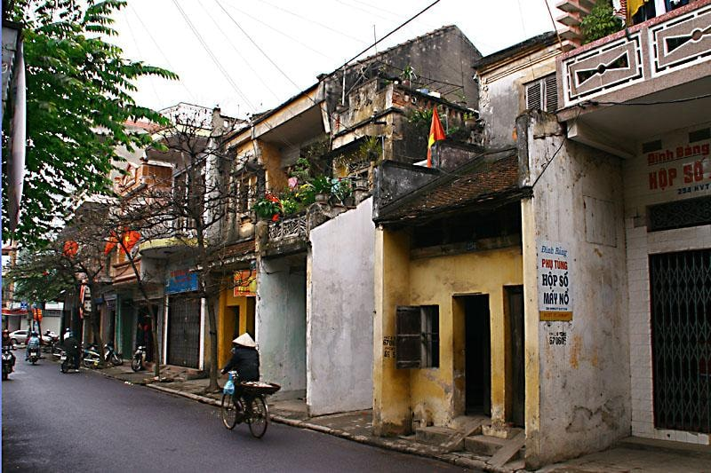
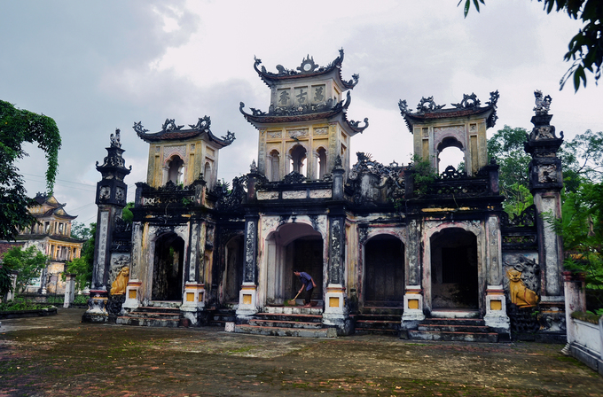
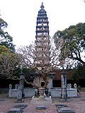

Địa điểm các đồn binh thời Trần
Địa điểm các đồn binh thời Trần
Xã Yên Nghĩa, Huyện Ý Yên
Địa điểm các đồn binh thời Trần gồm 3 ngôi đền: Xối Đông Thượng, Xối Đông Trung, Xối ...

Khu Phố Cổ Nam Định – Du Lịch Phố Cổ Nam Định
Thành phố Nam Định
Phố cổ Nam Định ra đời chỉ sau phố cổ Hà Nội, cũng đẹp và sầm uất không kém Hà Nội 36 ....

Chùa Cổ Chất
Xã Phương Định, Huyện Trực Ninh
Chùa Cổ Chất còn gọi là chùa Phổ Quang thuộc thôn Cổ Chất xã Phương Định huyện Trực ...

Chùa Cổ Lễ
Thị trấn Cổ Lễ, Huyện Trực Ninh
Chùa Cổ Lễ là một quần thể kiến trúc đạo Phật và tín ngưỡng Việt Nam mang các yếu tố ...